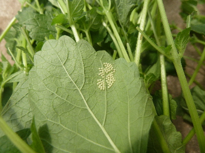
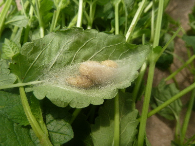
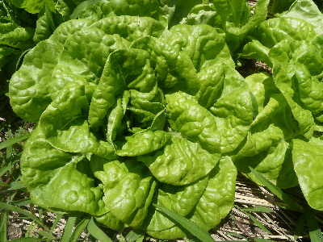

遊びで植物を育てよう
2018/06/24
最近レモンバームがお気に入りですが、...
レモンバームのお茶が最近気に入っててよく飲んでます。
今日も沢山収穫しました。

虫の卵かな。幼虫になる前に収穫できてよかった。

これは何でしょうね。
害虫が育つ前にドンドン収穫しようと思いました。
【6月TOP】
【日記TOP】
【園芸TOP】
2018/06/16
レタスが食べ放題です。
近頃レタスが大量に収穫出来ています。

そのままだとかさばって大量に食べれないので、塩コンブ、キムチ、ドレシング、ダシ醤油とかに漬けて小さくして食べてます。
今のところ飽きずに美味しく食べてます。
【6月TOP】
【日記TOP】
【園芸TOP】
2018/06/02
今年はカモミールが大きく育ちませんでした。
小さいのがあちこちあったので、今年は沢山収穫できるかも？って思っていたんですが、株が大きくなりませんでした。

ちょっと収穫するのも面倒なので、今年は収穫するのをやめます。
種を採って秋に蒔こうかとも思うんですが、せっかく蒔くなら新しい種を買った方がいいかも？なんて思っています。
でも秋になったらカモミールのことを忘れて、種まきを忘れてしまいそうだな。
【6月TOP】
【日記TOP】
【園芸TOP】
過去の日記
【2024年6月の日記】
【2023年6月の日記】
【2022年6月の日記】
【2021年6月の日記】
【2020年6月の日記】
【2019年6月の日記】
【2018年6月の日記】
【2017年6月の日記】
【2016年6月の日記】
【2015年6月の日記】
【2014年6月の日記】
【2013年6月の日記】
【2012年6月の日記】
【6月TOP】
【日記TOP】
【園芸TOP】
畑仕事じゃないよ。
【おいしいものを食べよう。】【たくさん寝よう。】
【ソロ活をしよう!】【季節感のあることをしよう。】【動画視聴はほどほどに。】【当サイトの全てのコンテンツは無断転載禁止です。】